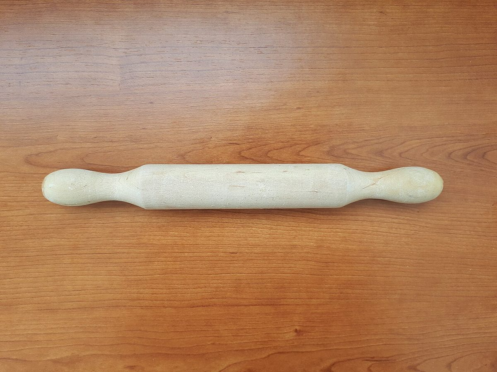
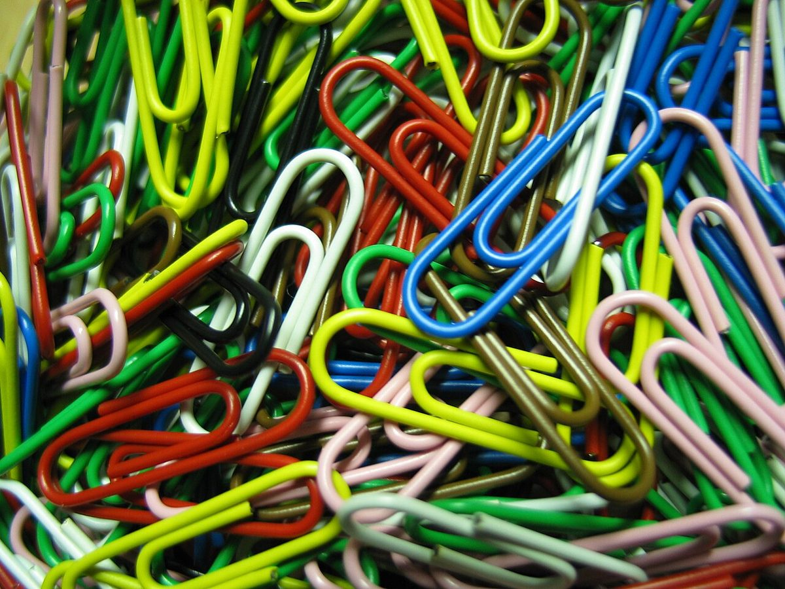
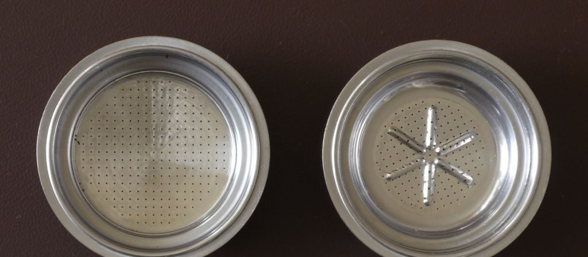

店のこと
店のこと
確認できているのは、店名・所在地・電話番号・Instagramのアカウントです。
このページの「想像してみる」部分は、制作側が想像して書いたものです。お店の実際の様子・考え・メニューとは関係がありません。
確認できていること
- 店名は「のぞみカフェnanairo」、業種はカフェ
- 所在地は山形県鶴岡市北茅原町５−５３
- 電話番号は0235-26-1787
- Instagramは@nanairo_n_sketch
- 営業時間・定休日・メニュー・価格・ご予約・駐車場は準備中

想像してみる
七つ道具を、ひとつずつ。
屋号の「nanairo」から「七」を連想し、お店の中身を七つの道具に見立ててみました。ここに載せたのは想像のメモと写真だけで、実際のお店の道具や設備ではありません。お店の理念や由来を示すものでもありません。
- 1名前を掛ける札
- 2場所を示す目印
- 3声をつなぐ受話器
- 4様子を伝える写真帳
- 5時を刻む針
- 6品を並べる棚
- 7ご予約の目印
5・6・7は、まだ空いている定位置です。準備ができ次第、本物の情報に置き換えます。
道具の小物たち(イメージ)
こまかな部品の写真


